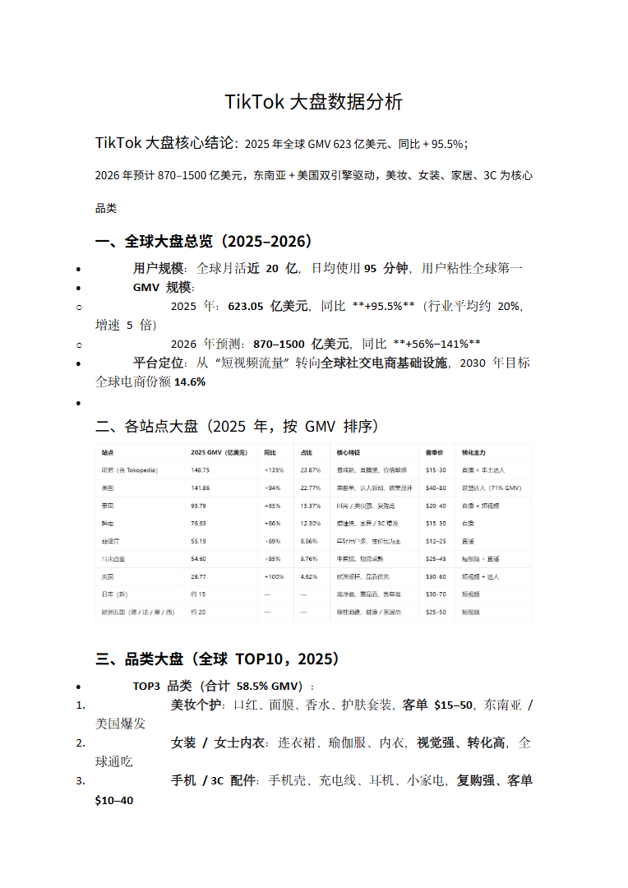
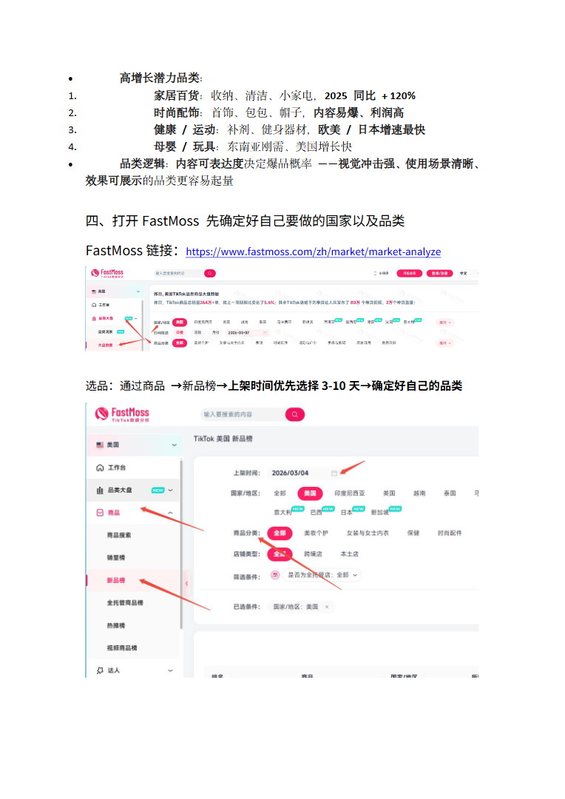
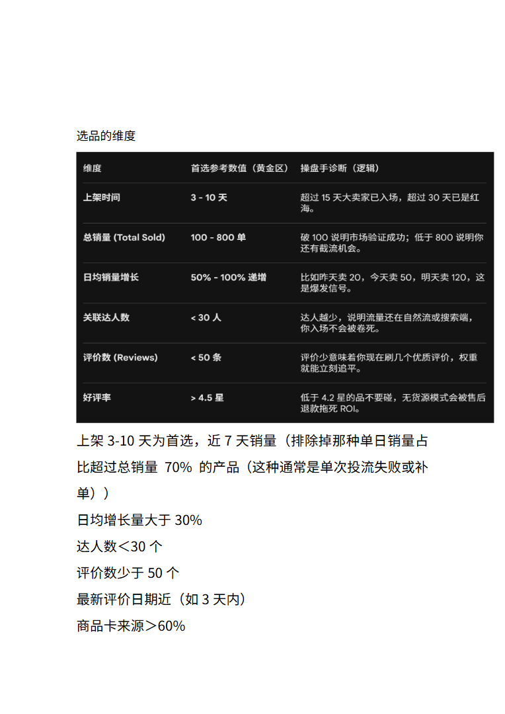
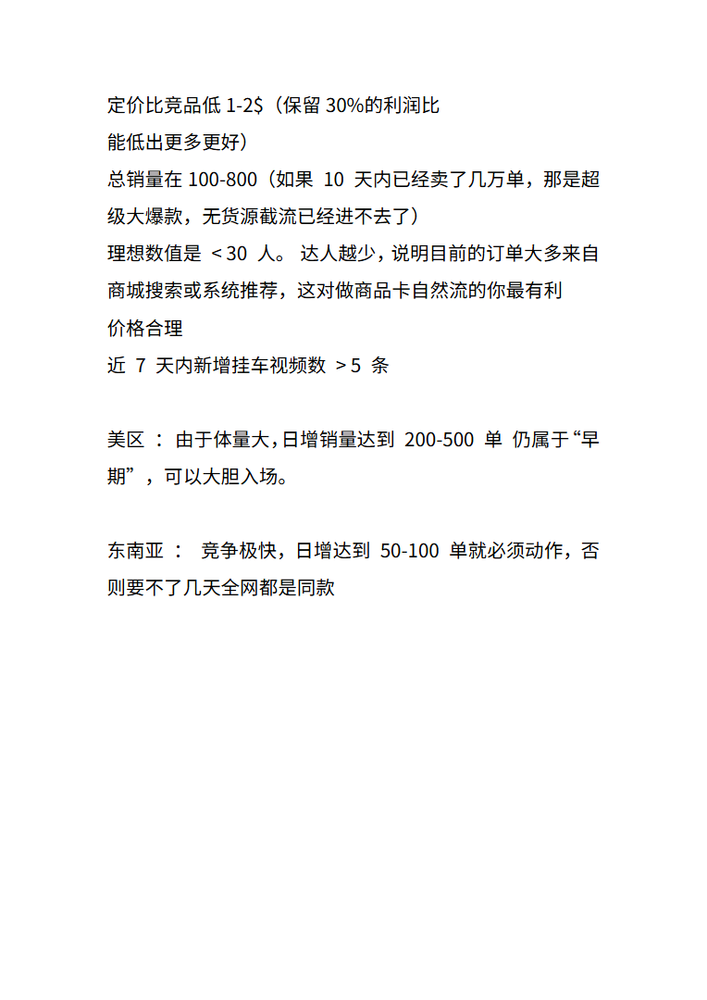

第 1 页

查看文字
TikTok大盘数据分析
TikTok大盘核心结论：2025年全球GMV623亿美元、同比+95.5%；
2026年预计870–1500亿美元，东南亚+美国双引擎驱动，美妆、女装、家居、3C为核心
品类
一、全球大盘总览（2025–2026）
用户规模：全球月活近20亿，日均使用95分钟，用户粘性全球第一
GMV规模：
o2025年：623.05亿美元，同比**+95.5%**（行业平均约20%，
增速5倍）
o2026年预测：870–1500亿美元，同比**+56%–141%**
平台定位：从“短视频流量”转向全球社交电商基础设施，2030年目标
全球电商份额14.6%
二、各站点大盘（2025年，按GMV排序）
三、品类大盘（全球TOP10，2025）
TOP3品类（合计58.5%GMV）：
1.美妆个护：口红、面膜、香水、护肤套装，客单$15–50，东南亚/
美国爆发
2.女装/女士内衣：连衣裙、瑜伽服、内衣，视觉强、转化高，全
球通吃
3.手机/3C配件：手机壳、充电线、耳机、小家电，复购强、客单
$10–40
第 2 页

查看文字
高增长潜力品类：
1.家居百货：收纳、清洁、小家电，2025同比+120%
2.时尚配饰：首饰、包包、帽子，内容易爆、利润高
3.健康/运动：补剂、健身器材，欧美/日本增速最快
4.母婴/玩具：东南亚刚需、美国增长快
品类逻辑：内容可表达度决定爆品概率——视觉冲击强、使用场景清晰、
效果可展示的品类更容易起量
四、打开FastMoss先确定好自己要做的国家以及品类
FastMoss链接：https://www.fastmoss.com/zh/market/market-analyze
选品：通过商品→新品榜→上架时间优先选择3-10天→确定好自己的品类
第 3 页

查看文字
选品的维度
上架3-10天为首选，近7天销量（排除掉那种单日销量占
比超过总销量70%的产品（这种通常是单次投流失败或补
单））
日均增长量大于30%
达人数＜30个
评价数少于50个
最新评价日期近（如3天内）
商品卡来源＞60%
第 4 页

查看文字
定价比竞品低1-2$（保留30%的利润比
能低出更多更好）
总销量在100-800（如果10天内已经卖了几万单，那是超
级大爆款，无货源截流已经进不去了）
理想数值是<30人。达人越少，说明目前的订单大多来自
商城搜索或系统推荐，这对做商品卡自然流的你最有利
价格合理
近7天内新增挂车视频数>5条
美区：由于体量大，日增销量达到200-500单仍属于“早
期”，可以大胆入场。
东南亚：竞争极快，日增达到50-100单就必须动作，否
则要不了几天全网都是同款